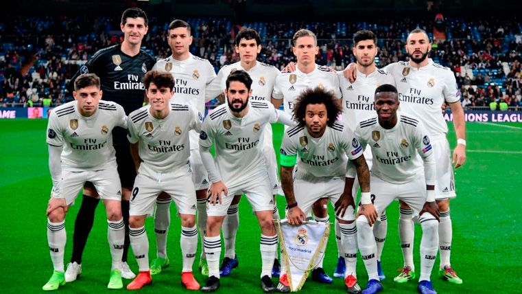

| 
| 
|
About Me

My name is Lucas Furtado. I'am currently majoring in Computer Science at The University of Rhode Island. In 2021 I graduated from Shea Highschool where I Studied and played soccer for two years.
I was born in Cape Verde but at the age of ten I moved to France where I lived for five years. During my free time I like to go to the gym, watch Tv, play sports,learn new things, and most importantly spend time with my familly. I'am a fanactic follower of Real Mardid and Portugal Soccer.
|  |  |
I'am also passioned in video games, engineering and much more. The reason why I choose computer science as my major is because my goal is to be a game developper in the future and I know computer science will help me achieve that goal.